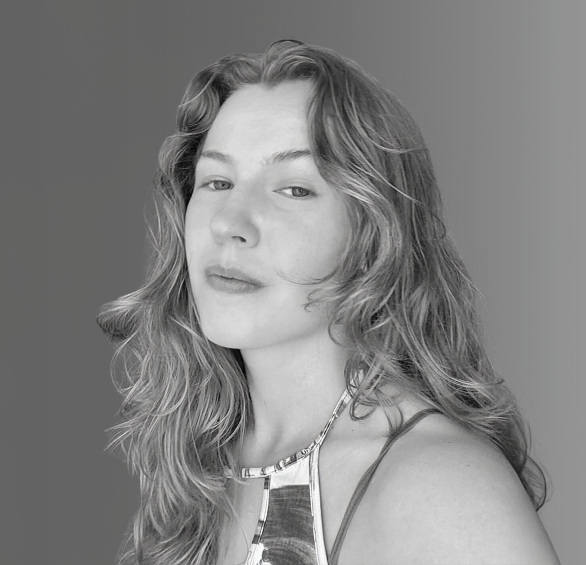
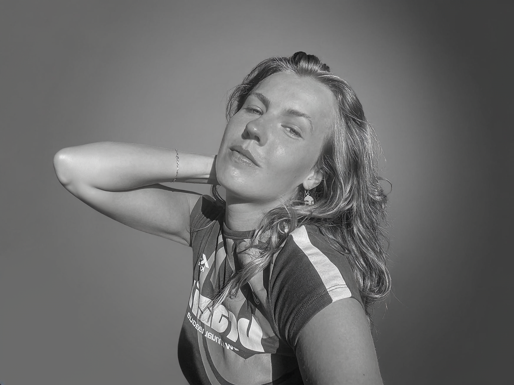
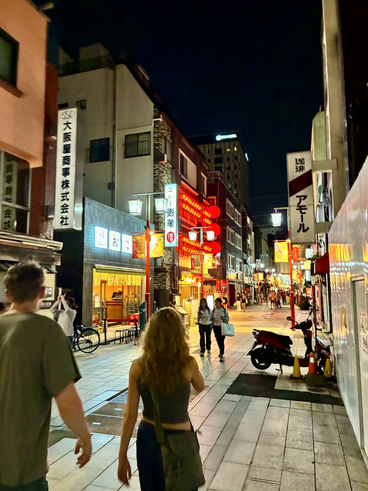
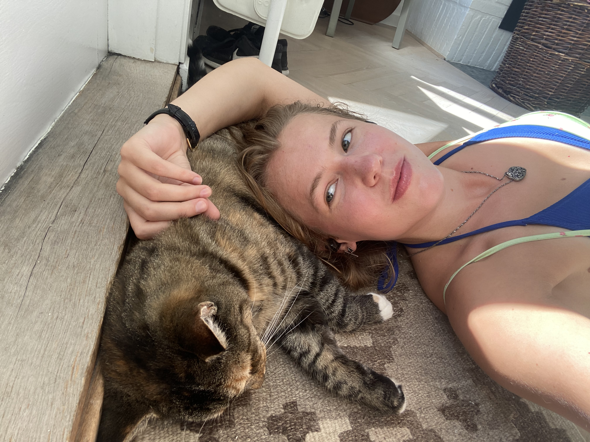
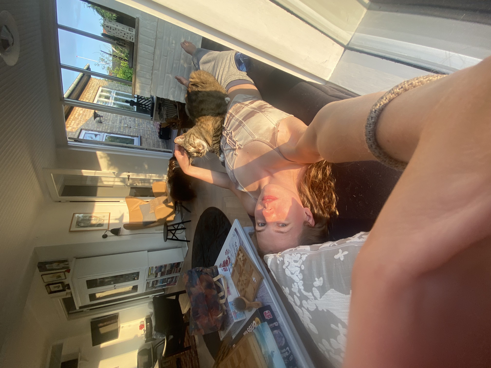

About Me
I'm Kristine, a Medialogy student who enjoys turning ideas into things people can actually interact with.
I'm interested in the space between technology, design and creativity. I like making things that are not only functional, but also feel engaging and considered — whether that is a game, a website, an interactive installation or a completely experimental idea.
I enjoy working across different parts of a project. I can spend one day writing code and building systems, and the next thinking about interaction, visual design, storytelling or how a user is going to experience the final result.
A big part of how I work comes from Problem-Based Learning. I like the process of starting with a problem, researching it, trying something out, testing it, discovering what doesn't work and then improving it. There is something satisfying about seeing a rough idea slowly turn into something real.
Throughout my studies, I've worked with game development, web development, UX/UI, VR, interactive media and creative technologies. I've also had the chance to work on everything from small experiments to larger group projects, which has taught me a lot about both creating things and working with other people.
I'm naturally curious and always interested in learning something new. I like experimenting with tools I haven't used before, picking up new skills and seeing where an idea can go when you give yourself room to explore it.




